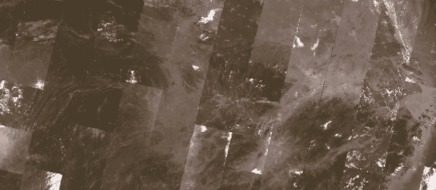

PIE-Engine 是由航天科技集团打造的国产遥感云服务平台，其核心能力围绕遥感影像数据构建，集数据资源、处理分析与行业应用于一体，为遥感领域提供了全链条解决方案。
在数据资源层面，PIE-Engine 整合了海量多源遥感影像，覆盖全球范围且时间跨度长。既有国产高分系列、资源系列卫星的中高分辨率光学影像（如高分二号 0.8 米亚米级数据），也包含国际 Landsat、Sentinel 等卫星数据，甚至涵盖 MODIS 低分辨率遥感数据及 Sentinel-1 雷达影像，光谱范围覆盖光学、热红外、微波等多个维度。数据时间跨度从 20 世纪 80 年代的 Landsat 系列到近年高频更新的国产卫星，可满足长期动态监测与实时分析需求。
影像处理功能是 PIE-Engine 的核心竞争力之一。平台提供从预处理到高级分析的全流程工具：预处理环节支持辐射定标、大气校正（如 FLAASH 模型）、几何校正等操作，提升数据精度；信息提取层面，可通过 NDVI、NDWI 等指数实现水体、植被等地物的自动识别，亦能借助深度学习模型（如 CNN）进行语义分割；动态监测功能支持多时相影像对比，直观呈现土地利用变化、灾害范围演变等；定量反演模块则基于遥感模型，实现叶绿素 a 浓度、地表温度等参数的精准计算，为水质监测、生态评估提供数据支撑。
在应用场景上，PIE-Engine 的遥感影像能力已深度融入多个领域：生态环境领域可用于森林覆盖监测、湿地退化分析；农业场景中支持作物长势评估、病虫害预警；灾害应急时能快速响应洪涝、火灾等灾害，辅助损失评估；城市规划领域可监测热岛效应、分析不透水面扩张。此外，平台为科研与教育提供低代码开发环境，支持 Python/JavaScript 编程接口及可视化操作，降低技术门槛，助力学术研究与行业创新。
本网页使用的是由USGS（美国地质调查局）提供的Landsat8 Collection 2 Surface Reflectance（C2SR）数据集，该数据集的时间范围是 2013 年 03 月至今，数据更新频率为16天，空间范围覆盖全球，分辨率为30 m。Landsat 8 Collection 2 Surface Reflectance (C2SR) 数据集具体波段数据如下表所示
表1 Landsat8 C2SR数据集波段参数表
| 名称 |
波段 |
波长范围/μm |
乘法比例因子 |
加性比例因子 |
| B1 | 海岸波段 | 0.433-0.453 | 0.0000275 | -0.2 |
| B2 | 蓝色波段 | 0.450-0.515 | 0.0000275 | -0.2 |
| B3 | 绿色波段 | 0.525-0.600 | 0.0000275 | -0.2 |
| B4 | 红色波段 | 0.630-0.680 | 0.0000275 | -0.2 |
| B5 | 近红外波段 | 0.845-0.885 | 0.0000275 | -0.2 |
| B6 | 短波红外1 | 1.560-1.660 | 0.0000275 | -0.2 |
| B7 | 短波红外2 | 2.100-2.300 | 0.0000275 | -0.2 |
| B10 | 热红外波段 | 10.60-11.19 | 0.00341802 | 149 |

图1 Landsat8 C2SR加载的长江流域遥感影像